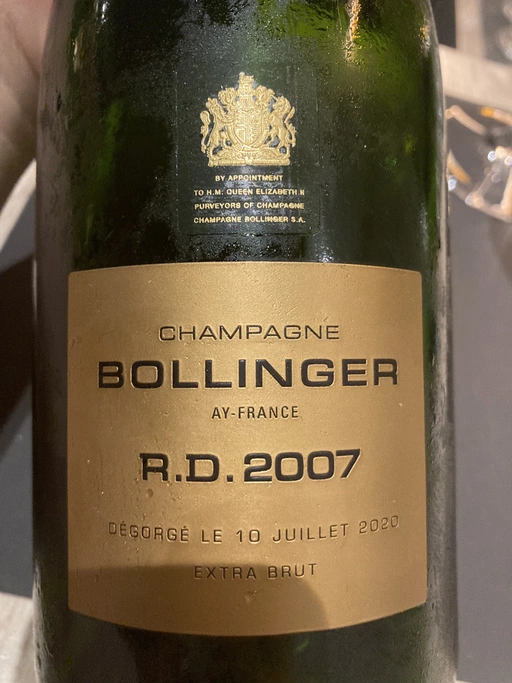

- Type
- White Sparkling, Extra brut
- Producer
- Bollinger
- Vintage
- 2007
- Location
- France, Champagne AOC
- Grapes
- Pinot Noir, Chardonnay
- Alcohol
- 12.5
- Sugar
- 3.4
- Price
- 8500 UAH
- Cellar
- N/A
Blend of the 2007 vintage. 70% Pinot Noir, 30% Chardonnay. 14 crus: 91% Grands crus and 9% Premiers crus.
Exclusive use of the cuvée. Fermentation entirely in oak barrels. Only the very best vintages are elevated to the level of Bollinger R.D.: the 2007 vintage is characterised by remarkable precision and energy.
Maturation: A very long maturation, more than four times longer than required by the appellation, for an infinite array of flavours: a true wine alchemy. Maturation carried out under natural cork.
Recent disgorgement. Bollinger R.D. is released only a few months after it is disgorged. This recent disgorgement guarantees the remarkable freshness of the wine.
Dosage: Very low, Extra Brut, 3 grammes per litre.
To the eye: Intense shimmers of gold.
To the nose: Complex on the nose with aromas of honey and brioche. This is followed by a host of spices (ginger, cumin, caraway and more), before evolving into notes of mirabelle plum, dried apricot and fresh hazelnut.
On the palate: A lively and clean opening that reveals notes of white plum, walnut and aniseed. Its freshness is beautiful and its tension incredible.
Bollinger
Ratings
2021-06-22 - 9.00
Bollinger Dinner #5. One more beauty by Bollinger. Elegant and sophisticated wine. Lots of oil, cider, ginger, brioche, white plum, dried nuts. Very powerful, ready to explode, young and well balanced. Aftertaste is still green. Would love to see how it evolves over time alas I have no bottle to experiment with haha.